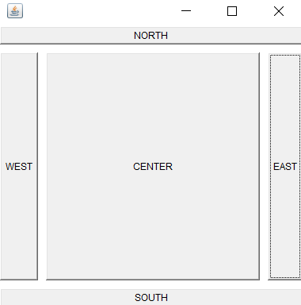

3. Create a simple AWT application that displays multiple buttons with BorderLayout manager (North, East, West, South, Center)
import java.awt.*;
import java.awt.event.*;
class MyFrame extends Frame
{
Button b1 = new Button("EAST");
Button b2 = new Button("NORTH");
Button b3 = new Button("WEST");
Button b4 = new Button("SOUTH");
Button b5 = new Button("CENTER");
MyFrame()
{
setBounds(100,100,400,400);
setLayout(new BorderLayout(10,10));
//b1.setBounds(100,100,50,30);
add(b1,BorderLayout.EAST);
add(b2,BorderLayout.NORTH);
add(b3,BorderLayout.WEST);
add(b4,BorderLayout.SOUTH);
add(b5,BorderLayout.CENTER);
addWindowListener(new WindowAdapter() {
public void windowClosing(WindowEvent e)
{
System.exit(1);
}
});
setVisible(true);
}
}
class Main {
public static void main(String[] args) {
new MyFrame();
}
}
OUTPUT
